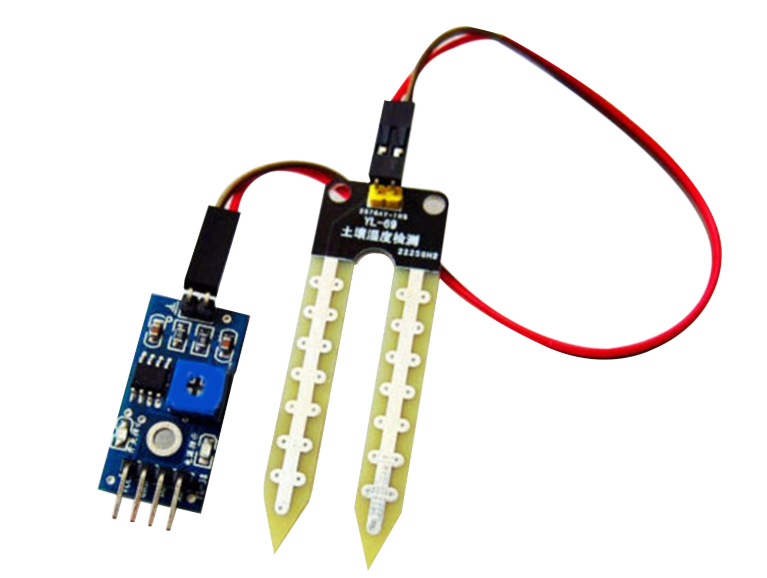
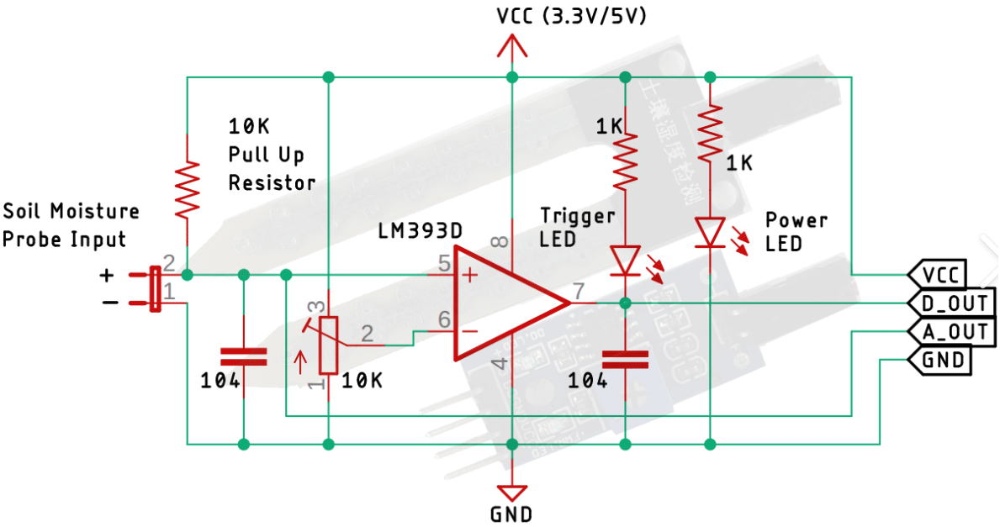

Soil Moisture Sensor
 Measures the volumetric water content in soil.
Key Information
- Type: Resistive or Capacitive (most common low-cost are resistive)
- Operating Voltage: 3.3V to 5V DC
- Output: Analog (and often a digital threshold output)
- Principle (Resistive): Measures electrical conductivity between two probes
- Corrosion: Prone to corrosion over time with resistive sensors
- Sensitivity: Adjustable via onboard potentiometer (for digital output)
- Applications: Plant watering systems, smart farming
About the MQ-2 Sensor
A soil moisture sensor is used to measure the water content in soil. These sensors typically come in two main types: resistive and capacitive. Most inexpensive sensors found in hobby kits are resistive, which measure the electrical conductivity between two probes inserted into the soil. More water in the soil means better conductivity and lower resistance.
The sensor module usually provides both an analog output (which can be read directly by an Arduino's analog pin to get a continuous reading of moisture levels) and a digital output. The digital output can be configured to trigger when the moisture level crosses a certain threshold, adjustable via an onboard potentiometer.
While resistive sensors are simple and affordable, they can corrode over time due to electrolysis. Capacitive sensors are generally more durable as they don't have exposed electrodes. Soil moisture sensors are widely used in automated plant watering systems, smart agriculture, and environmental monitoring.